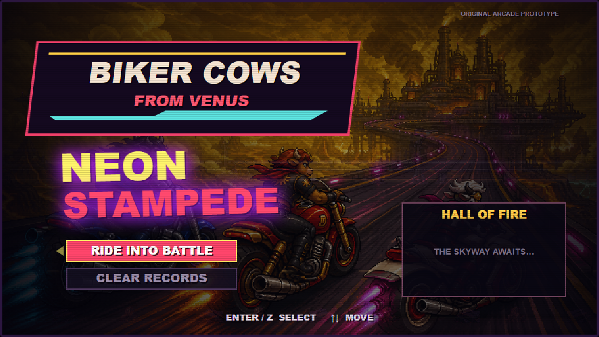
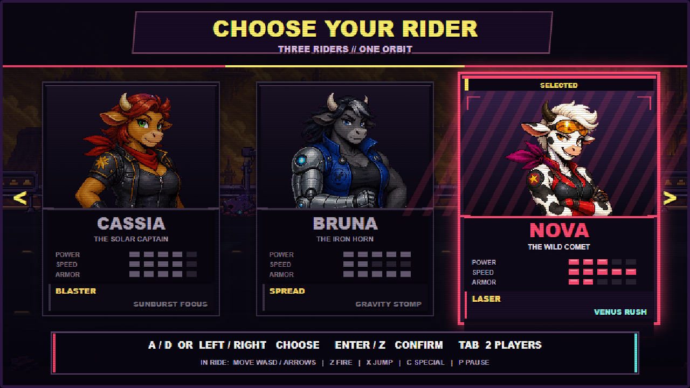
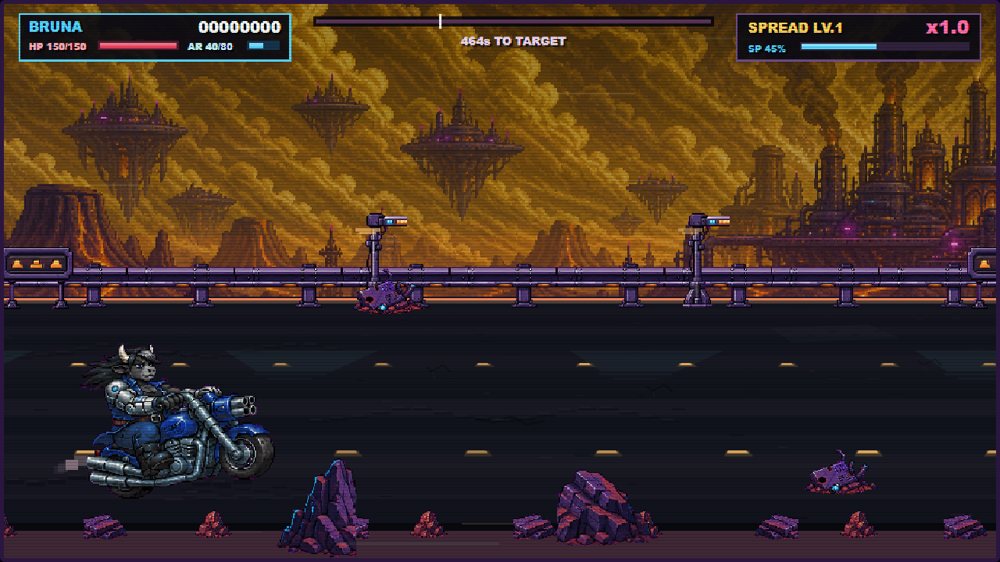
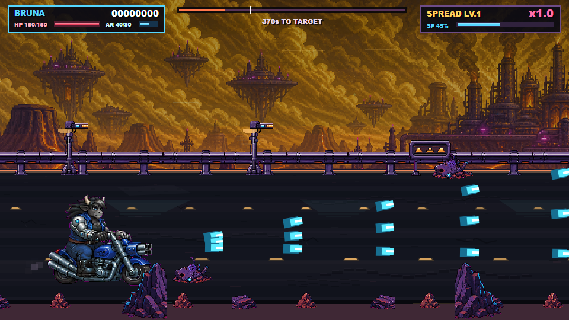
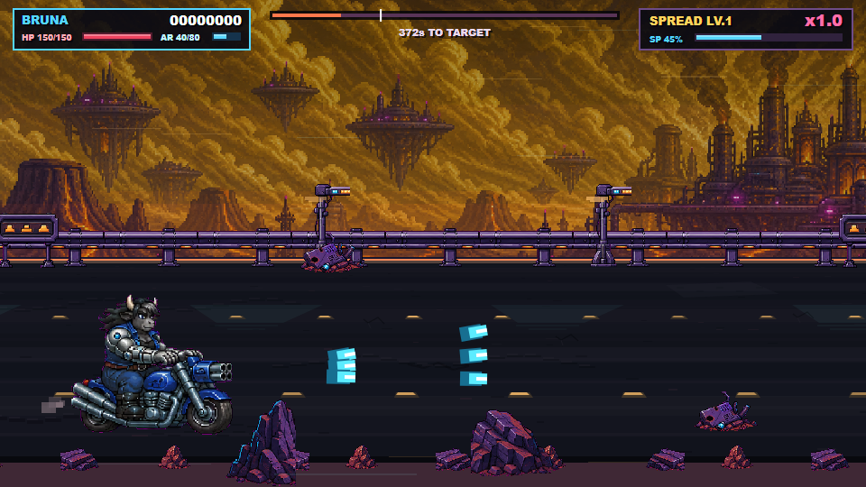
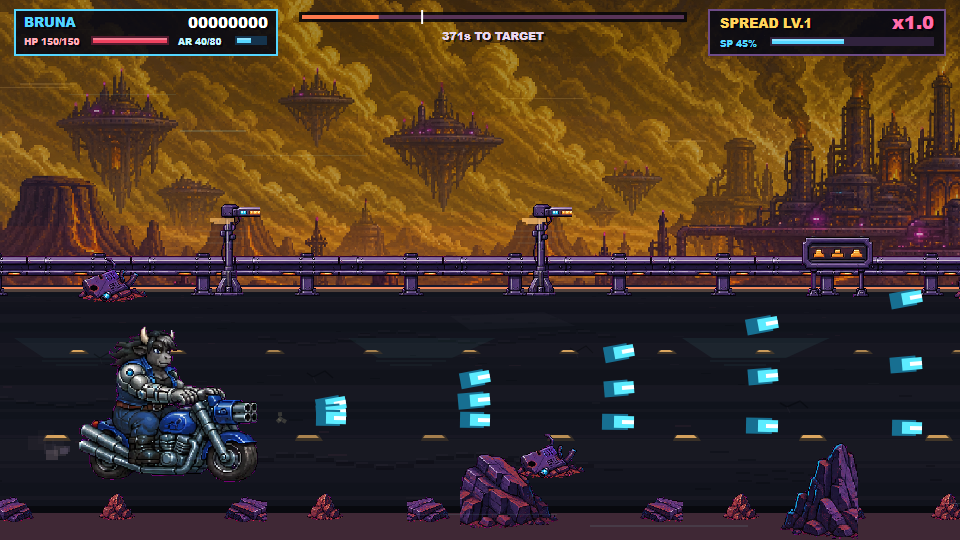
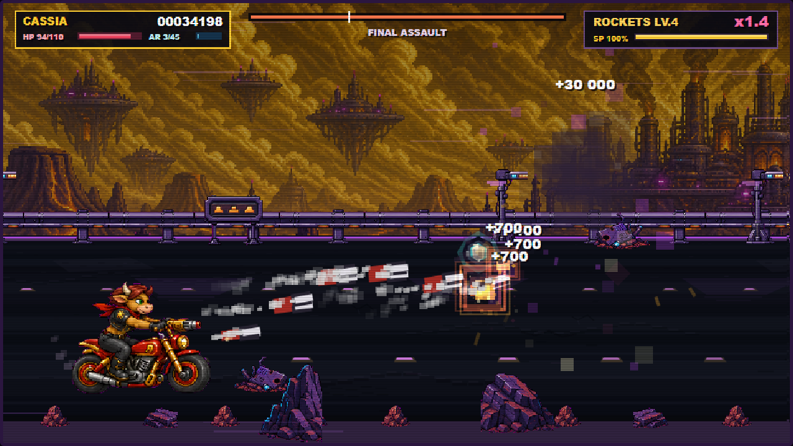
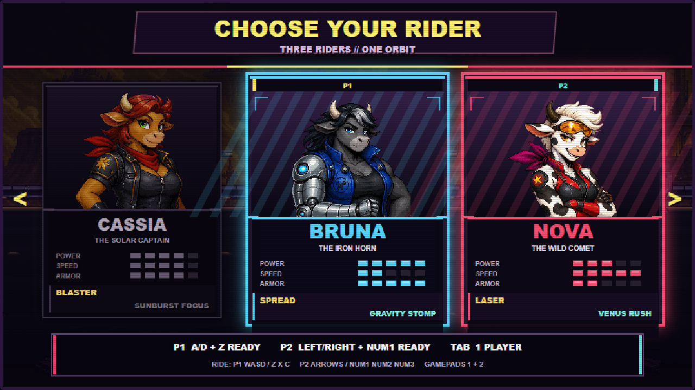
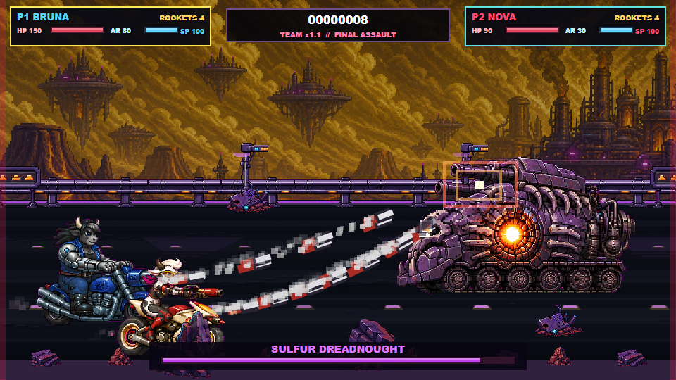
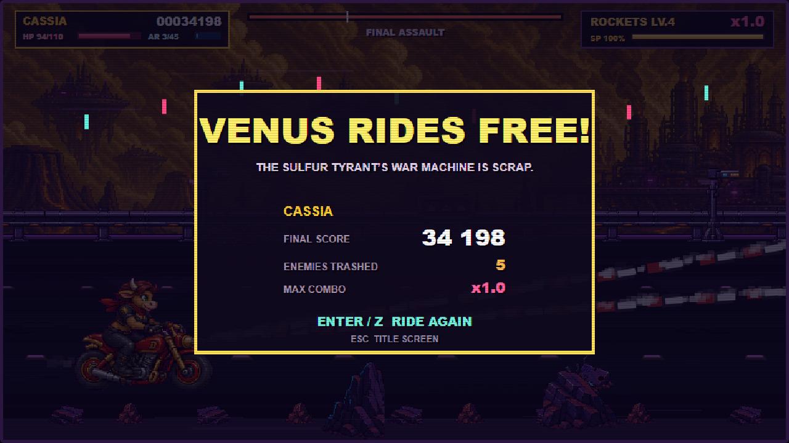

Biker Cows from Venus: Neon Stampede
Wave 17 · реальные production-кадры браузерного Gauntlet. Новый самостоятельный состав, Venus key art, три полных набора анимаций и сохранённый solo/co-op маршрут.
13/13 atlas readyruntimeErrors=[]solo + co-op PASS
Идентичность и выбор



Bruna continuity gate




Принято: отклонённый первый Bruna-лист заменён точечной правкой. Base, sustained, release, jump и portrait используют одну левую серебряную киберруку с cyan-joint. Отдельный exhaust hardpoint теперь следует за конкретным atlas/frame и расположен на видимом выпускном патрубке.
Бой и кооператив




Проверка
.gauntlet/iteration-17/report.json: ok=true, 13/13 ready, runtimeErrors=[]. Полный production run прошёл title, select, ride, sustained/release/muzzle, impact, aerial, mini-boss, boss, victory/restart и co-op.